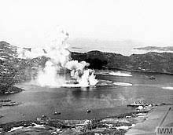

 |
When U-711x returned to Harstad on Feb 24 1945 she carried an unexpected load in her starboard torpedo tube. It was the body of an Englishman but this man wasn’t dead as they’d expected when they’d picked him from the freezing Barents Sea, he was, miraculously, alive.
They should never have taken him on
board. They’d surfaced, briefly, as the wind had begun whipping the sea into a
foam-flecked gale. They had wanted to see the wreckage of their victim. A British
corvette. They knew they’d hit her. Everyone in the boat had felt the
detonation. They had cheered.
It was their first real success. No one liked to think too
much about the fishing vessel they’d stopped late in the previous summer. It
had had eight civilians on board – Norwegians, heading for Shetland – though
they refused to admit their destination. Five men, a woman and two children.
They’d sunk the boat and landed the people in Lodingen. They didn’t need to
take them all the way back to Hammerfest. They hadn’t come from there.
Seeing the children marched away to Gestapo prison had
been hard. There would be interrogations. Would pressure on the children be used to make the adults talk? That wasn’t why the crew of U-711x had joined the
Kriegsmarine, not to make war on children. They weren’t like the Luftwaffe.
They didn’t fight civilians. (Except merchantmen, carrying war materials to
enemies of the Fatherland. Not that they’d sunk any. Not in two years. U-711x was not a successful boat.)
If they hadn’t had a political officer on board, they’d have dropped the families ashore and put out to sea again. Maybe the Kapitan would have alerted the police, but he wouldn’t have handed them directly to the STAPO. Their Kapitan was a decent man. He had family, back in the Baltic. Most of them did. One day they wanted to see them again. Embrace them without seeing ghosts. Without feeling ashamed.
It was uncomfortable when they’d been forced to shift their
base westward. The Russians were overrunning Finnmark. The U-boats were relocated
nearer to the village where those families had lived.
Their political officer had an accident there. He’d disappeared
one dark night in the docks. He could have fallen and hit his head, then tumbled
into the water. The nights were long during the Norwegian winter.
No body had been found so they’d recorded him as absent without
permission and left early for their patrol. If they’d reported it
officially the reprisals against the local people would have been savage. They
guessed the disappearance was revenge for those children but they didn’t talk about it. They
knew that they were hated. They felt more comfortable at sea though they hadn’t achieved much – except staying alive. Too many of
the submariners they’d trained with were dead.
This had been a proper target: a Royal Navy escort vessel,
all 925 tons of her. The Allied convoy had been lying stopped near the mouth of
the Kola Inlet. U-711x could hardly believe her luck as she crept ever closer
to her stationery prize. Her Kapitan had become an expert in using dense layers
of the Arctic Ocean to confuse the enemy sonar. With the new torpedoes there’d
be no giveaway trail of bubbles as the missile homed in on its victim. Nothing
to reveal their whereabouts.
The torpedo hit must have been direct to her depth charges. They
heard a massive explosion and then the corvette went down with a rush. It took
maybe half a minute.
U-711x stayed deep as she heard the British ships searching
for survivors. Perhaps there would be another sitting duck. Very soon she could
hear most of the vessels leaving the area. They must know they had been fools
to loiter here. One large ship stayed longer, then she too left. U711x sent a
pair of torpedoes after her but they missed.
Then she surfaced to enjoy her triumph. This made up for the
months – years – of cold, dark, profitless patrolling. Their feelings of
inferiority as they compared themselves with other more successful boats. They
had no emblems of success, no iron cross for their Kapitan, no civic feasting
for themselves. They were lucky to be alive, they knew that, but alive for what
purpose? To send a few children into prison?
It was a shock to discover they’d picked up a body. It had
come up on the conning tower, caught uncomfortably round their periscope. They
should have re-submerged and let it float off. But they didn’t. They’d been down
for a long time. They were short of air and they wanted to fix this place in
their minds. This bleak patch of sea, so close to the enemy coast. The scene
of their success.
The body blocked their view. The Kapitan sent two crewmen up
on deck to clear it.
The bitter cold of the Arctic air was a shock. There was a
gale getting up and the sea surface was whitening with spume. The two men
struggled to disengage the corpse so they could push it off their deck. It was
wearing earphones. There were wires trailing from the headset. It looked as if
the body had been blown straight out of its workstation when their torpedo hit.
That must have been some blast they’d triggered. Mechanikergefreiter Peter
Sehmel took a closer look. The body’s face was blue with cold and white with
rime. Its eyes were wide and staring.
Then, as if they sensed his gaze, his human warmth, the eyes
flickered.
‘It’s alive!’ said Peter, jerking upright as best as he
could. This cold was so intense it threatened to freeze you in position, like
ice statues. How could this person have survived? ‘We should get him below.’
That was wrong. They should have pushed him back into the
sea, freeing up the periscope as they’d been ordered, then gone back down the
ladder into the smelly fug. Away from the screaming wind that was whipping away
their wits. They knew the order from GrossAdmiral Dönitz. ‘Rescue contradicts
the most basic demands of war: the destruction of hostile ships and their crew.
Be harsh.’
‘We can’t do it,’ said Peter’s crewmate. ‘We must follow
orders.’
The body’s eyes met Peter’s again. It wasn’t a body; it was
a living being.
‘It’s acceptable,’ said Peter, with a rush of gladness,
pointing to the wireless headset still clamped to the man. ‘It’s an officer. He
may have information. We can question him.’ They could see a book edge
protruding from the top of the man’s pocket. ‘He may have codes!’
There wasn’t any more discussion. It would have been
impossible to kill the man now they’d looked at him and he’d looked back.
Instead they heaved and shoved to get his frozen mass through the hatch and
into the warmth of the boat.
To start with the rest of the crew mocked them as they cut off
his sodden uniform and rubbed his frozen skin. But only in fun. No one was truly
angry. It was like the body was their trophy, snatched from the battle scene.
Even the Kapitan agreed that the prisoner’s information might be valuable.
U711x had dived again, and everyone felt safe as the storm
raged above. The enemy would have enough to do surviving on the surface. They
wouldn’t come looking.
They cheered their Kapitan for his skill. Then cheered him
again when he ordered that each man be allowed two bottles of Becks from a
store that no one knew he carried. One, he said, was for their discipline in
the long, silent, stalking process; the other for their success. A great shot!
The sonar operators and torpedomen were cheered as heroes. The glow of goodwill
included their rescued man. When the book in his pocket turned out to be about
sailing, not codes, people just shrugged. Their B-Dienst cryptanalysts were
known to be brilliant. They didn’t need wet books from half-drowned British
officers.
When it became obvious, during the following days, that the
prisoner had completely lost his memory after the blast from their torpedo had
blown him out of his wireless room, people felt oddly glad. There wasn’t any
need to interrogate him or even keep him in confinement. Where could he go? He
was a nice guy, smiled all the time and embraced his rescuers as soon as his
limbs began functioning again. They didn’t want him to remember his companions, lying dead at the bottom of the Barents Sea.
His Royal Navy uniform got stuffed into one of the tubes
that still contained a torpedo. When it was fired the clothes would go too and
if they got found the officer would be assumed dead -- as he should have been.
They began to teach him German. After a few days he picked
it up so fast that they wondered whether he might have known their language
before the war. Many Britishers did. There were people who still thought they
should never have been enemies.
Maybe it was those bottles of Becks; maybe it was the
prisoner’s smiles and gratitude, the indiscriminate frequency with which he
embraced his rescuers – which seemed to include everyone – but there wasn’t any
objection when Peter dressed him in the items of uniform
left by Maschinengefreiter Hubertus Hausser,
their ‘absent’ political officer. It became amusing to call their Englishman 'Hubertus'. Especially when he learned to answer to the name and follow their
instructions, however silly they were. They had needed to be careful what they
said when the first Hubertus was around. This was a joke that continued to
improve.
An uninvolved observer might
wonder whether the crew of U-711x had gone a little mad at this time. Had some
trace of laughing gas seeped into the submarine atmosphere?
But as they surfaced and raised
their swastika flag as they approached their base, there was some dispute what
they should do. Hand him over obviously.
Then how would they explain
their use of Maschinengefreiter Hausser’s clothes – and name? The fact they’d
not reported the political officer’s death. Did they have time to re-educate
their prisoner into his own identity? He’d need that evidence if he were to be
treated properly as a prison-of-war. His clothes and papers had gone when
they’d taken a shot at a straggling merchantman. The torpedo had been wasted as
the merchantman was almost out of range and then a swarm of British aircraft came
humming over. There must be a Royal Navy carrier nearby.
Things were changing fast in
this far northern area of the war. They’d lost their base in Hammerfest. The
people of Hammerfest had lost their town too. It had been totally burned.
Their base now was in Kilbotn a few km south of Harstad. They’d radioed their success and knew that there’d be an official welcome from the port captain. It wasn’t like the days when the legendary commanders had brought their boats home to the sound of bands and cheering crowds and had been given civic receptions and parades. If they could keep the new Hubertus out of sight initially, maybe he could reappear when they were docked. Save them from awkward explanations or from being given a new, possibly fanatic, political officer.
Mechanikergefreiter Sehmel made a nice bed in the torpedo
tube and persuaded ‘Hubertus’ into it. He was so amenable, this former
Englishman. He always smiled and agreed and said thank you. A great improvement
on the man whose clothes he wore. They’d given him an ultra-short haircut and a
shave. Hausser had made a big deal out of staying clean and smart even when the
rest of them had two weeks’ stubble and, frankly, stank. The people on Black
Watch, their depot ship, hardly knew him. It would save them trouble if
they believed that the absence report had been a misunderstanding and that
Hausser had rejoined. As long as the Englishman never remembered who he was –
or wasn’t.
***
The new Hubertus served two more patrols with U-711x. They
were back in the sea area near Murmansk where he’d been left for dead. Peter
worried this might stimulate some memories but it didn’t seem to. Maybe
wireless operators were like submariners, lived in their own different world.
They hit a Soviet despatch vessel on their first patrol but
they didn’t sink her. Then, on May 2nd when they were coming to the end of
another uneventful tour, all U-boats received an order from GrossAdmiral Dönitz
to ceasefire and return to their bases immediately. Dönitz was their Fuhrer
now. It seemed that the war might be over.
Most commanders had expected to be told to scuttle their
ships but the order never came.
What had it all been for?
U-711x raised her flag, as usual, as she came gently through
the Andfjord to reach Kilbotn in the early afternoon May 4th 1945
and docked, as usual, alongside Black Watch. Most of the crew hurried
across to the former passenger ferry as soon as they were given leave. They
hoped for letters, needed news, wondered whether they’d be going home...
There hadn’t been a formal surrender. Not yet. The new
government was in Flensburg, at the Naval School. Rumour was that Dönitz was
desperately playing for time so the army could get home before the Russians
rolled in from the East. The crew of U-711x felt the same. That’why they’d left
Hammerfest. Everyone feared the Russians. For some it was maybe a bad
conscience: they were aware how suddenly Hitler had turned them on their former
ally: they had some idea how harsh the fighting had been as their army and air
force struck deep into that vast country. They expected the Soviets to want
revenge.
Peter had already seen the Soviets in action. He’d been a 16-year-old
in Estonia when they’d annexed his country: 17, when the rest of his family had
been bundled into cattle trucks and forcibly deported. He’d have been loaded
with them if he’d not been sleeping down in the harbour that night, keeping an
eye on his friend’s yacht See Adler. Two weeks later the Germans
invaded: See Adler was destroyed in the fighting and Peteris went to his
friend in Hamburg where he worked in a shipbuilding yard until he was old
enough for the Kreigsmarine. His home had been U-711x ever since; her Kapitan
his nearest approximation to a father. If the war was truly over, he had no
idea where he'd go.
On the day the British bombers came, Peter hadn’t joined the
hopeful group hurrying to Black Watch. There was no one to write him
letters. He had volunteered to undertake some maintenance work on the
submarine. The Kapitan had said that if their boat was to be surrendered, she
should be a credit to them.
Hubertus had also joined the working party but Peter’d sent
him across to the depot ship to fetch metal polish and burnishers. He was worried
about the prisoner. During their return from patrol, he’d noticed him looking at that English sailing book as if
he might attempt to read it. Could his memory return? Peter took the book away
and cursed himself for not having done so earlier.
It was a sunny afternoon, visibility was perfect, yet there was no alert and no fighters scrambled from Bardufoss to protect them. Maybe they, too, believed the war was over.
The attack only lasted seven minutes. The British had arrived in force. 44 aircraft from the
Royal Navy Home Fleet carriers: Wildcat fighters and Avenger torpedo bombers,
gliding in low to drop their load with impressive accuracy. Black Watch
caught fire, exploded, broke in two, sank. Everyone was killed.
On U-711x the Kapitan shouted at the working party to cut her loose and get away. She had already been hit and was hit again,
repeatedly. She only achieved a couple of hundred metres distance from the
burning Black Watch before she sank. Those on board, however, survived.
Author's Note: Unfortunately only the 'heartwarming' aspects of this story and its main character are fiction. The rest is historically true. I first read the account of the torpedoing of the RN corvette in Richard Woodman's Arctic Convoys. (John Murray 1994) and used it fictionally as the opening of The Salt-Stained Book (Strong Winds 1) . I returned to it in Pebble (Strong Winds 6) and here's a little more romanticising of historical fact.
The 'real' U-711 is not a war grave today, but a dive site. https://www.youtube.com/watch?v=j82Hv0XefqQ